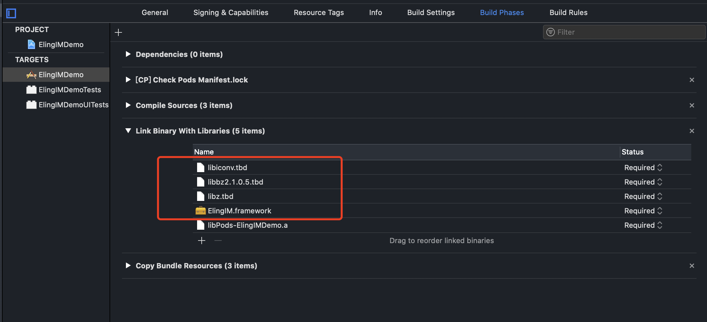
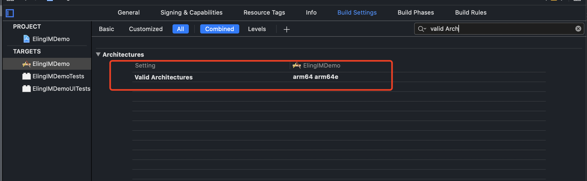

手动导入SDK
1.1 下载SDK
下载SDK ，其中包括
libElingIM.a
ELClient.h
ELUserManager.h
ELLoginManager.h
ELChatManager.h
ELGroupManager
ELCallManager.h
ELContactManager.h
ELConversation.h
ELMessage.h
ELMessageBody.h
ELTextMessageBody.h
ELFileMessageBody.h
ELImageMessageBody.h
ELVoiceMessageBody.h
ELVideoMessageBody.h
ELCallMessageBody.h
ELVideoCallMessageBody.h
ELAudioCallMessageBody.h
ELGroup.h
ELUserInformation.h
1.2 导入SDK
添加到项目中
将下载下来的库文件添加到工程的目录下，并勾选截图中标注的三项。

设置工程属性
向 Build Phases ➙ Link Binaries With Libraries 中添加SDK所依赖的库文件。

设置 Building Settings ➙ Enable Bitcode 为 NO。
修改项目架构。设置 Building Settings ➙ Valid Architectures 为 arm64 arm64e。

添加 SDK 所依赖的第三方 pod 库。
在项目的 Podfile 文件中添加以下行：
pod 'XCMacros', '~> 1.0.5'
pod 'FMDB', '~> 2.7.5'
pod 'MJExtension', '~> 3.2.1'
pod 'AliyunOSSiOS', '~> 2.10.8'
pod 'XCDateUnit', '~> 0.0.5'
pod 'XCBaseModule'
进入到 Podfile 所在的目录，执行以下命令：
pod install
执行完命令后，打开工程文件运行即可。